1次新拟合 · 同43,658行 · 845固定参考池 · 每个目标排自身
完整结果 · 预定机制 · 全分组/低污染 · 25事件正反结果 · 工业日期分层 · 实际覆盖 · 30地点四季＋29固定场
本轮候选定位：有独立同城TRAIN监测站时可用；不作为无站城市的全面替换。
相对EVENT_EXT1H，CITY RMSE 23.605→26.122退化；STATION 18.812→14.638、TIME 21.510→15.875改善。CITY全部没有同城输入，缺测处理仍按统一TRAIN规则；本轮未添加专门回退或门控。
25已曝光事件ΔRMSE 37.267→31.951，18改善/7变差；南通Δ−29.423→28.617（实测53）。阳泉Δ171.394→157.429变差；焦作两站一好一坏，全部图保留。
同城独立TRAIN监测站前1h观测作为新增输入；不是纯卫星。CITY组自然无同城值；测试站与25事件站不进入参考池。归档发布延迟未知。新背景与原CS/GRAPH零均值局地项组合，空间相对细节保持。
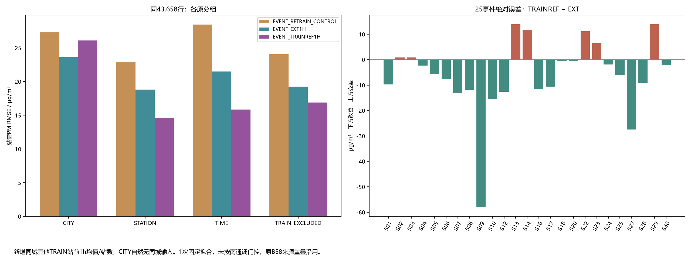
| group | stratum | method | n | RMSE | MAE | bias |
|---|---|---|---|---|---|---|
| CITY | ALL | B58 | 3106 | 29.381 | 17.472 | -1.620 |
| CITY | ALL | EVENT_RETRAIN_CONTROL | 3106 | 27.319 | 16.635 | -1.631 |
| CITY | ALL | EVENT_STATE24 | 3106 | 26.351 | 15.990 | -1.364 |
| CITY | ALL | EVENT_EXT1H | 3106 | 23.605 | 13.968 | -0.552 |
| CITY | ALL | EVENT_TRAINREF1H | 3106 | 26.122 | 15.223 | -2.997 |
| STATION | ALL | B58 | 5083 | 24.254 | 15.919 | 0.423 |
| STATION | ALL | EVENT_RETRAIN_CONTROL | 5083 | 22.933 | 15.211 | 0.603 |
| STATION | ALL | EVENT_STATE24 | 5083 | 21.363 | 14.218 | 0.372 |
| STATION | ALL | EVENT_EXT1H | 5083 | 18.812 | 12.185 | 0.096 |
| STATION | ALL | EVENT_TRAINREF1H | 5083 | 14.638 | 9.337 | 0.367 |
| TIME | ALL | B58 | 4703 | 27.953 | 16.032 | -1.973 |
| TIME | ALL | EVENT_RETRAIN_CONTROL | 4703 | 28.453 | 16.127 | -1.965 |
| TIME | ALL | EVENT_STATE24 | 4703 | 27.541 | 15.155 | -2.684 |
| TIME | ALL | EVENT_EXT1H | 4703 | 21.510 | 12.591 | -1.289 |
| TIME | ALL | EVENT_TRAINREF1H | 4703 | 15.875 | 9.430 | -0.373 |
| TRAIN_EXCLUDED | ALL | B58 | 5216 | 26.281 | 17.623 | 0.897 |
| TRAIN_EXCLUDED | ALL | EVENT_RETRAIN_CONTROL | 5216 | 24.070 | 16.217 | -0.079 |
| TRAIN_EXCLUDED | ALL | EVENT_STATE24 | 5216 | 22.486 | 15.250 | -0.140 |
| TRAIN_EXCLUDED | ALL | EVENT_EXT1H | 5216 | 19.276 | 12.918 | 0.283 |
| TRAIN_EXCLUDED | ALL | EVENT_TRAINREF1H | 5216 | 16.903 | 10.278 | 0.562 |
| site_id | observed_delta_new | predicted_delta_ext | predicted_delta_new | new_minus_ext_abs_error |
|---|---|---|---|---|
| S05_jiaozuo_1829A | 84.0 | 44.458 | 50.149 | -5.691 |
| S09_nantong_1168A | 53.0 | -29.423 | 28.617 | -58.039 |
| S13_yangquan_1742A | 205.0 | 171.394 | 157.429 | 13.966 |
| S22_jiaozuo_3169A | 99.0 | 63.943 | 52.757 | 11.186 |
| S29_yangquan_1738A | 250.0 | 171.394 | 157.429 | 13.966 |
| method | pairs | event_RMSE | event_MAE | mean_observed_delta | mean_predicted_delta | positive_delta_pairs |
|---|---|---|---|---|---|---|
| B58 | 25 | 78.042 | 51.719 | 77.12 | 29.354 | 23 |
| EVENT_EXT1H | 25 | 37.267 | 29.950 | 77.12 | 57.577 | 24 |
| EVENT_RETRAIN_CONTROL | 25 | 72.290 | 47.129 | 77.12 | 34.220 | 23 |
| EVENT_STATE24 | 25 | 77.283 | 52.389 | 77.12 | 32.319 | 23 |
| EVENT_TRAINREF1H | 25 | 31.951 | 24.057 | 77.12 | 58.954 | 25 |
| EXT_CS | 25 | 37.268 | 29.947 | 77.12 | 57.569 | 24 |
| EXT_GRAPH | 25 | 37.268 | 29.947 | 77.12 | 57.569 | 24 |
| NEW_CS | 25 | 31.954 | 24.063 | 77.12 | 58.947 | 25 |
| NEW_GRAPH | 25 | 31.954 | 24.063 | 77.12 | 58.947 | 25 |
不筛选成功场；全部方法同原支持、同RAW色限。高背景超界仅显示饱和。
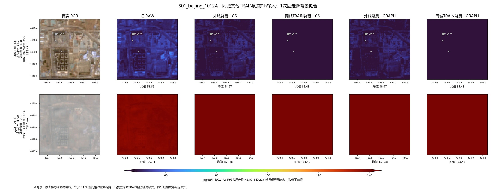
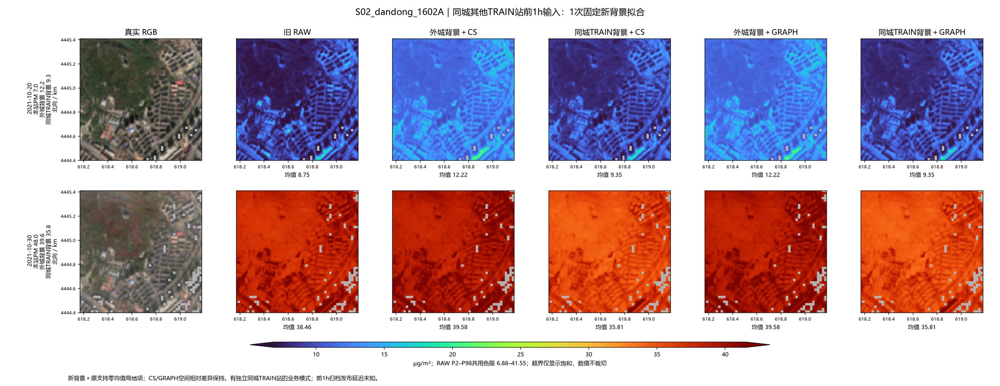
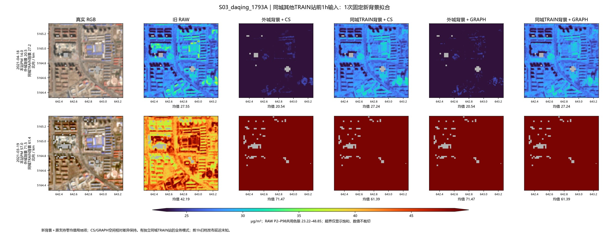
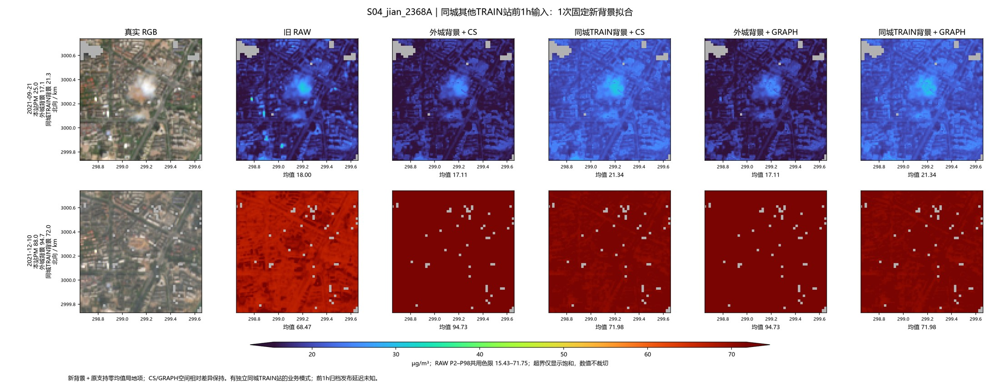
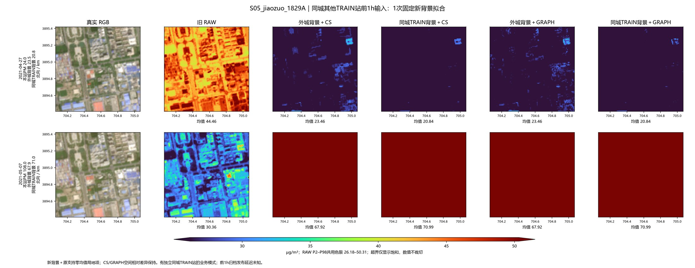
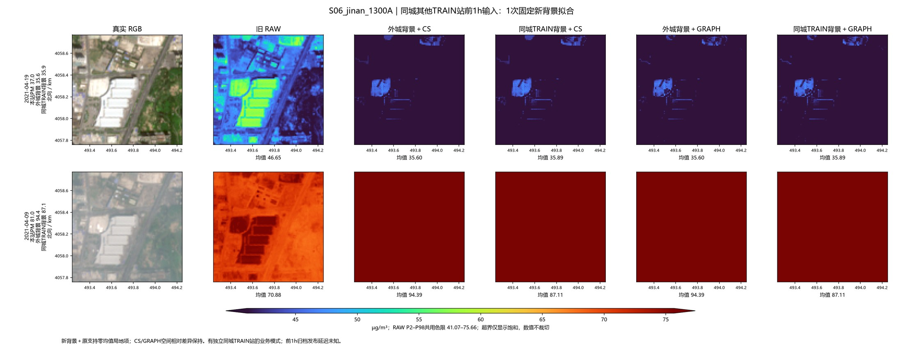
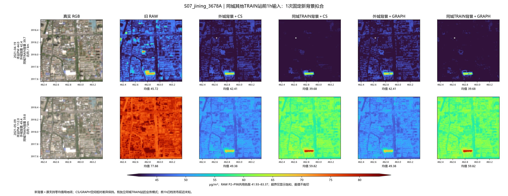
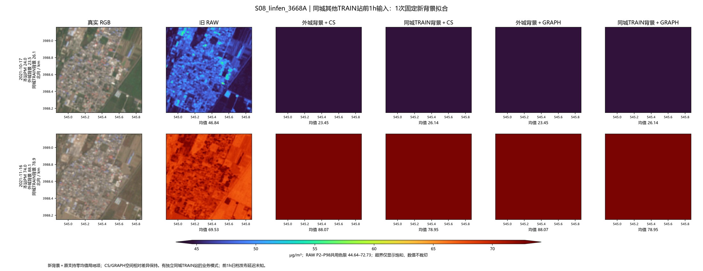
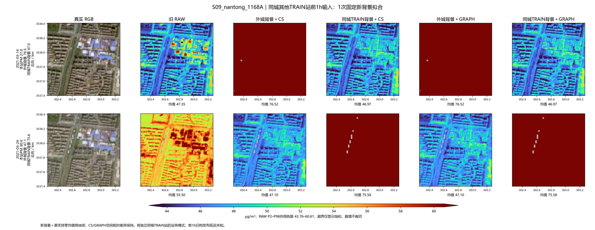
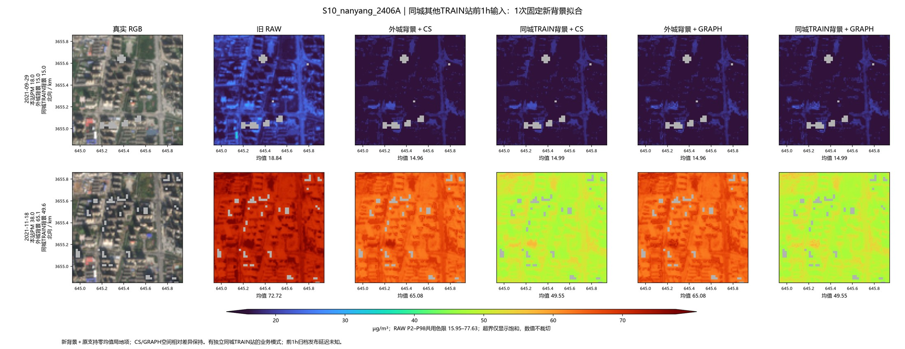
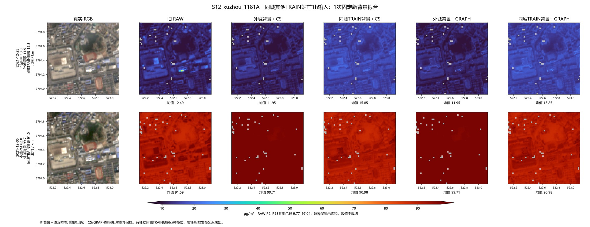
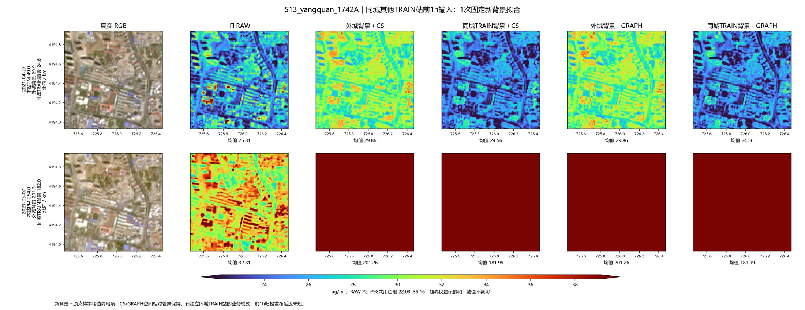
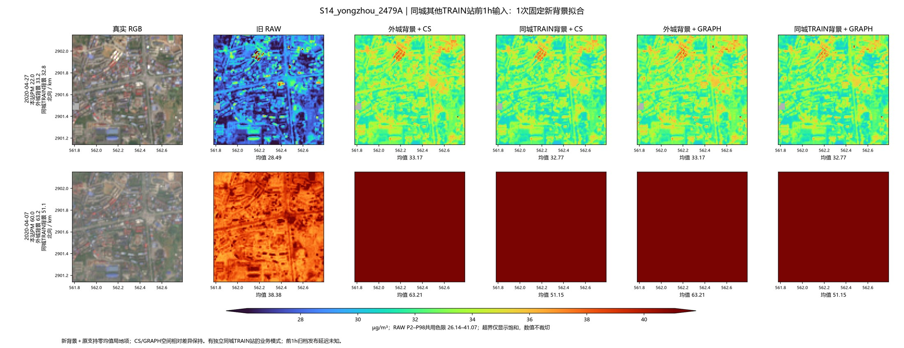
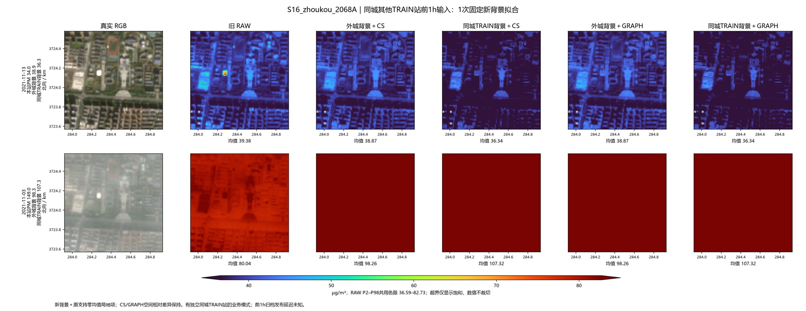
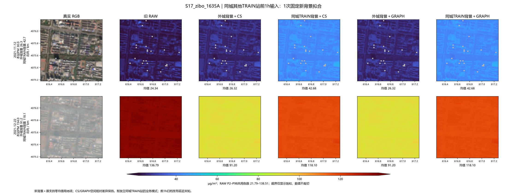
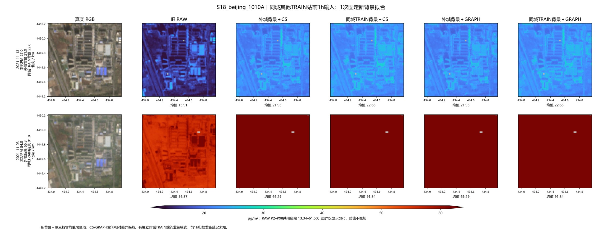
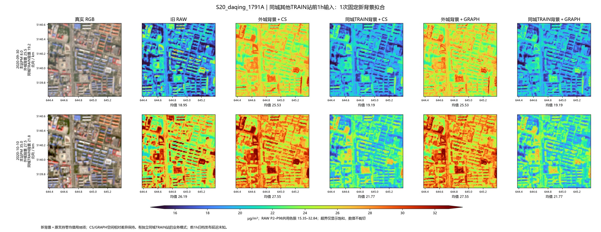
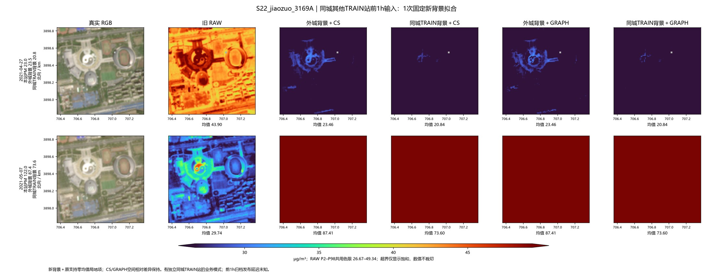
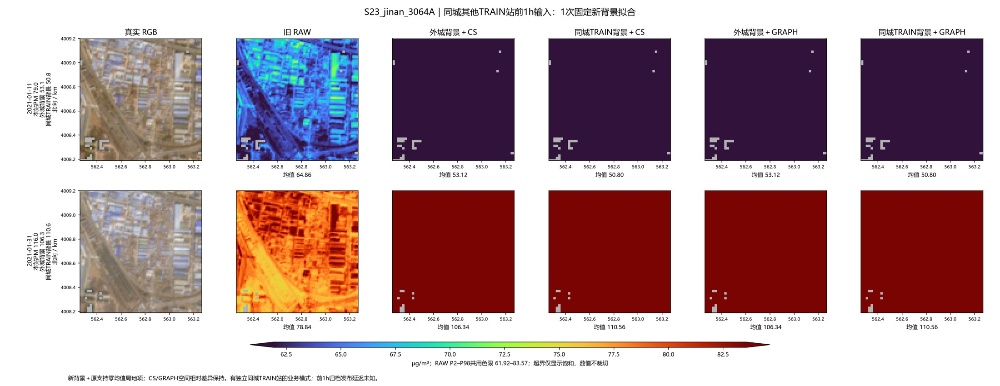
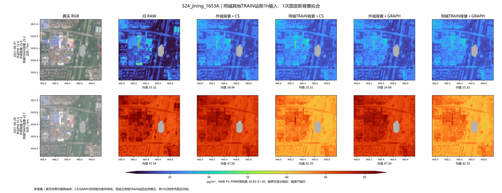
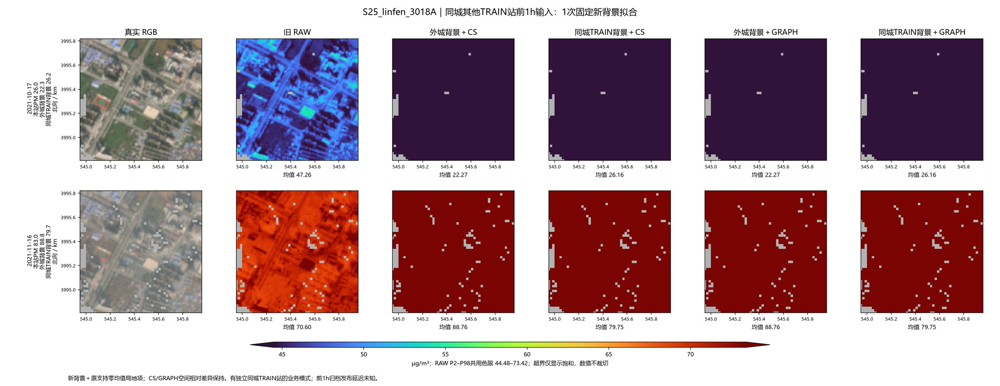
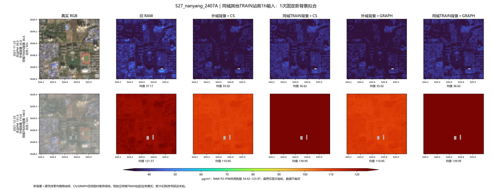
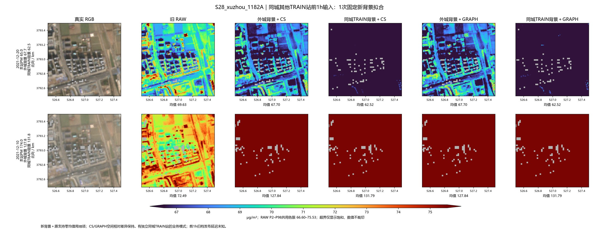
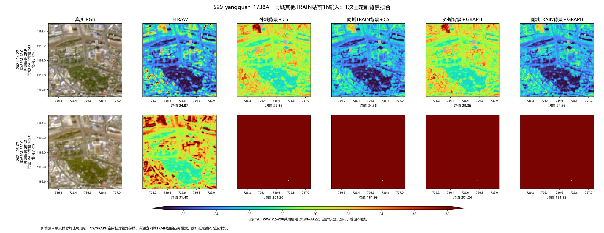
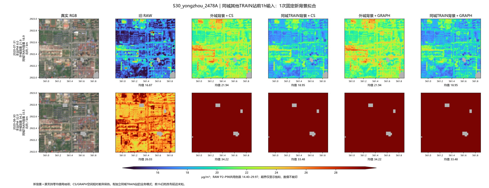